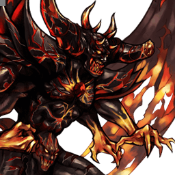

Dissidia Final Fantasy
Feral Chaos
Colosse surpuissant au close/mid range, si polarisant qu'il est le plus souvent banni
Position dans la méta
Non classé dans la tier list tournoi 2017.
Vue d'ensemble
Feral Chaos, personnage jouable introduit dans Dissidia 012, opère au close et mid range pour submerger l'adversaire avec certaines des attaques les plus fortes du jeu. C'est de la puissance brute à l'état pur : vitesse, portée, haute priorité et Wall Rush y abondent. Du Destroy fulgurant au gap closer oppressif Brute Force jusqu'à l'infâme HP Via Dolorosa, il applique une offense difficile à contester pour beaucoup de personnages : braveries au startup rapide, à la recovery courte ou en priorité mid qui guard crushent facilement, HP à longue portée ou à énorme couverture verticale, timings et durées variables — de quoi percer les options défensives et décourager les interruptions d'assist à la plupart des distances courantes.
Il exploite remarquablement l'EX et l'Assist : la majorité de ses attaques infligent le Wall Rush de loin ou initient le Chase, qui se convertissent en assist avec une relative facilité. Avec les stats de base les plus hautes du jeu, son potentiel de Wall Rush, une génération d'EX au-dessus de la moyenne et des multiplicateurs de dégâts sur ses attaques, le payoff est excellent en dégâts, gain et déplétion de meter. Jauge pleine, l'EX Mode booste attaque, défense et vitesse de déplacement, et l'oppressif EX Burst Regnum Dei garantit que l'adversaire ne s'en tire pas indemne, qu'il place une attaque ou non.
Cette puissance a un prix : les Capacity Points. Toutes ses abilities coûtent exponentiellement plus cher, attaques comme actions de base (block et esquive au sol compris), et il subit des restrictions innées exclusives — réduction passive de bravery, verrou de jauge EX et verrou de jauge Assist — dont chaque levée coûte 50 CP, plus que la Precision Evasion souvent ajoutée par-dessus. Sans augmentation naturelle du CP maximum, caser le strict nécessaire est très coûteux et ses builds se spécialisent par style de jeu ou par matchup. Les verrous ont toutefois un avantage majeur : équipés en même temps que l'accessoire Side by Side, ils en contournent la restriction d'absorption d'EX — l'EX ne vient plus que des EX Cores, mais c'est un atout unique vu la puissance de ses HP.
Ses faiblesses ne se limitent pas à la customisation : sa carrure géante rend les attaques homing plus dures à esquiver et masque la vue devant et au-dessus de lui, surtout face aux petits gabarits comme Onion Knight et Zidane. Il se bat bien sous presque tous les angles, sauf en air-to-air quand l'adversaire est bien au-dessus : ses anti-airs au sol sont efficaces, mais ses attaques aériennes le sont moins et il doit se déplacer pour contrer le halo camping. Enfin, le whiff punish à l'assist est la contre-stratégie phare contre ses HP les plus utilisés et quelques-unes de ses braveries. En compétitif, il a été banni la majeure partie de la vie du jeu pour ses matchups anormalement polarisants, et sa légalité — parfois accordée sous restrictions, comme sans EX ni Assist dans le Ranked japonais — reste un sujet controversé du metagame.
Forces
- Les stats de base les plus hautes du jeu (ATK et DEF au sommet, +1 chacune en EX Mode).
- Braveries exceptionnelles : startup rapide, recovery courte, contrôle d'espace, priorité mid, potentiel de combo d'assist et de Wall Rush.
- HP destructeurs à timing variable, bon tracking et longue portée.
- Génération d'EX élevée : beaucoup d'attaques rapportent de 60 à 96 EX Force.
- EX Burst écrasant : haute priorité sur toutes ses attaques, immunité à l'EX Break, contournement de la défense d'EX Burst et capacité d'interrompre n'importe quelle attaque.
- Fall speed rapide qui rend ses air dodges plus difficiles à punir.
- Synergie unique EX Core + Side by Side : ses verrous de jauge exclusifs contournent la restriction d'absorption d'EX de l'accessoire, EX et Assist utilisables sans les restrictions habituelles.
Faiblesses
- Coût en CP prohibitif : il ne peut pas équiper autant d'abilities que les autres personnages, ce qui restreint notablement ses actions disponibles et ses builds.
- Grande carrure : plus facile à toucher, et le champ de vision est obstrué devant lui et au-dessus de lui.
- Air-to-air déficient quand l'adversaire est bien au-dessus : ses attaques aériennes anti-airent mal, il faut se déplacer pour contrer le halo camping.
- Le whiff punish à l'assist est une contre-stratégie éprouvée contre ses HP les plus utilisés et certaines braveries.
- « No assist » est une restriction courante dans les rulesets et tournois communautaires où il est autorisé, pour compenser ses autres forces.
Stats & vitesses
| Nom | Feral Chaos (デスペラードカオス) |
|---|---|
| Jeu d'origine | Dissidia 012 [duodecim] Final Fantasy |
| ATK de base (LV100) | 113 (Normal, Highest)114 (+1 in EX Mode) |
| DEF de base (LV100) | 114 (Normal, Highest)115 (+1 in EX Mode) |
| Vitesse de course | 2.5 (Normal, Fast)0 (EX Mode, Fastest) |
| Vitesse de dash | 77 (Average / Good) |
| Vitesse de chute | 67 (Fast) |
| Chute après esquive | 16 (Very Fast) |
| BRV la plus rapide | 11F (Snarl) |
| HP la plus rapide | 37F (Deus Iratus,Via Dolorosa) |
| HP en 1 coup | Yes (Flagro Maximus, Via Dolorosa) |
| HP links | No |
| Command block | Yes (Deus Iratus) |
| Armes | Greatswords, Axes, Grappling Weapons |
| Armures | Gauntlets, Large Shields, Helms, Heavy Armor |
| Armes exclusives | Talons of Despair, Aegis of Strife, Calamitous Rage, Deafening Fissure, Endless Oblivion, Eternal Despair, Phantasmal Abyss, Cycle's End |
| Camp | Chaos |
Point or : ce personnage · petits points : le reste du cast · trait violet : moyenne. Valeurs du wiki, plus bas = plus rapide ; le rang à droite se lit directement (1ᵉʳ = le plus rapide).
Coups
Barre plus courte = coup plus rapide. Startup en frames (60 i/s, données dissidia.wiki), priorité indiquée après la valeur. Les coups marqués ★ sont les plus rapides du kit — ce sont en général vos meilleurs outils de punish et de pression.
Braveries
Au sol
Snarl Melee Low
Double morsure à 11F, sa bravery la plus rapide : poke éclair au corps-à-corps, également utilisée pour couvrir Raid en cancellant sa recovery. Chase, Wall Rush et 90 EX sur hit.
| Dégâts de base | 15, 15 (30) |
|---|---|
| Startup | 11F |
| Type | Physical |
| Priorité | Melee Low |
| EX Force | 90 |
| Effets | Chase, Wall Rush |
| CP (maîtrisé) | 60 (30) |
Vicious Melee Mid
Charge Melee Mid utilisable de plus loin que Snarl pour approcher vite ou anti-air. Son startup plus lent la rend plus réactable, avec un risque de situation post-esquive défavorable même sans whiff punish ; près d'un mur, elle ne garde pas toujours l'adversaire au contact en mixup.
| Dégâts de base | 1 x 11, 19 (30) |
|---|---|
| Startup | 21F |
| Type | Physical |
| Priorité | Melee Mid |
| EX Force | ~90 |
| Effets | Chase, Wall Rush |
| CP (maîtrisé) | 60 (30) |
Spew Melee Mid (close), Ranged Low (projectile)
Projectile qui fait surgir du magma sous les pieds de l'adversaire. Peu utilisé, mais fiable contre les personnages qui tiennent Feral Chaos à distance comme The Emperor et Golbez : il les attrape en pleine attaque stationnaire (Flare, Nightglow) et l'interrompt complètement.
| Dégâts de base | 5, 15 (20) |
|---|---|
| Startup | 23F (close), 43F (projectile) |
| Type | Physical (close), Magical (projectile) |
| Priorité | Melee Mid (close), Ranged Low (projectile) |
| EX Force | 60 |
| Effets | Chase, Wall Rush |
| CP (maîtrisé) | 60 (30) |
Erupt Melee Mid
Bond ascendant Melee Mid à hitbox assez large : sans maintenir le bouton, Feral Chaos écourte la montée et passe directement à la toupie finale. Sert à provoquer les attaques aériennes pour un stagger puni en Destroy, avec l'une des recoveries les plus courtes de son kit, cancellable en block, esquive ou n'importe quelle attaque (HP comprises) pour menacer les adversaires qui approchent pendant la recovery.
| Dégâts de base | 2 x 10, 25 (max 45) |
|---|---|
| Startup | 19F |
| Type | Physical |
| Priorité | Melee Mid |
| EX Force | 0 |
| Effets | Chase, Wall Rush |
| CP (maîtrisé) | 60 (30) |
En l’air
Destroy Melee Low
Griffes et coup de queue très rapides (13F), bonne couverture horizontale puis verticale : poke staple, whiff punisher et option défensive post-esquive qui clash avec les tentatives de dodge punish basse priorité, le tout avec 90 EX. Initie le Chase si le Wall Rush n'est pas immédiat, convertible en combo avec l'assist Aerith.
| Dégâts de base | 4 x 4, 14 (30) |
|---|---|
| Startup | 13F |
| Type | Physical |
| Priorité | Melee Low |
| EX Force | 90 |
| Effets | Chase, Wall Rush |
| CP (maîtrisé) | 60 (30) |
Brute Force Melee Mid
L'une de ses braveries les plus fortes, infâme pour sa vitesse, sa portée trompeusement longue et sa capacité à stagger et punir les blocks normaux au contact : le follow-up envoie l'adversaire vers le bas avec un gros knockback, souvent en Wall Rush même en altitude, convertible en empty chase + combo d'assist. Cela ouvre une pression au sol proche du Beat Fang de Squall ou de l'okizeme des autres jeux de combat. Elle poursuit mal les adversaires au-dessus de lui et ne le protège pas immédiatement à l'activation.
| Dégâts de base | 6, 7, 7, 10 (30) |
|---|---|
| Startup | 21F |
| Type | Physical |
| Priorité | Melee Mid |
| EX Force | 90 |
| Effets | Chase, Wall Rush |
| CP (maîtrisé) | 60 (30) |
Splinter Ranged Mid
Quatre ondes de choc Ranged Mid à longue portée qui poursuivent l'adversaire, très difficiles à contester de face ou en diagonale, avec Chase/Wall Rush pour convertir le dernier hit en combo d'assist. Startup plutôt lent mais fin difficile à whiff punir à l'assist ; méfiez-vous des utilisateurs aguerris de Precision Evasion, dont l'invincibilité (avec Evasion Boost) esquive les quatre projectiles et aligne une punition.
| Dégâts de base | 5 x 4 (20) |
|---|---|
| Startup | 29F |
| Type | Magical |
| Priorité | Ranged Mid |
| EX Force | 87 |
| Effets | Chase, Wall Rush |
| CP (maîtrisé) | 60 (30) |
Raid Melee Mid
Miroir d'Erupt : piqué Melee Mid dont l'early release écourte la course pour l'une de ses recoveries les plus rapides, à sécuriser au dodge cancel — sans générer de jauge d'assist s'il ne touche pas. Maintenu, il plonge en ligne droite jusqu'au sol avec deux hitboxes à l'atterrissage : le corps (Melee Mid, stoppé par les blocks haute priorité type Jecht Block ou Wrath, mais dont le stagger sur block normal laisse enchaîner à peu près n'importe quoi après le landing lag, jusqu'à Quo Vadis) et l'onde de choc, bloquable uniquement en haute priorité. Près d'un mur, il installe l'okizeme Via Dolorosa ; comme Erupt, il se cancel en block, esquive ou n'importe quelle attaque.
| Dégâts de base | 2 x 10, 15 (max 35) |
|---|---|
| Startup | 19F |
| Type | Physical |
| Priorité | Melee Mid |
| EX Force | 3 |
| Effets | Chase, Wall Rush |
| CP (maîtrisé) | 60 (30) |
Attaques HP
Au sol
Deus Iratus Melee High, Block High (1-37F)
HP multi-hit stationnaire au corps-à-corps (Wall Rush), parmi ses plus gros dégâts de bravery en martelant le bouton, dont la priorité Block High couvre tout le startup dans toutes les directions : il garde même après une esquive et peut servir de substitut au block au sol pour économiser des CP dans un build. Mixup correct après un Wall Rush, mais l'animation et la recovery longues rendent le whiff dangereux — comme le Shield of Light du Warrior of Light, tout est dans l'anticipation du moment où l'adversaire frappe.
| Dégâts de base | 2 x 4 (8) + 1 x N |
|---|---|
| Startup | 37F |
| Type | Physical |
| Priorité | Melee High, Block High (1-37F) |
| EX Force | 96 |
| Effets | Wall Rush, Block |
| CP (maîtrisé) | 100 (50) |
Quo Vadis Melee High
Uppercut en téléportation suivi d'une ascension de coups ultra-rapides, Wall Rush au sol en fin de combo (mais pas à certaines hauteurs). Si l'adversaire sort en assist change précoce, l'attaque continue et son tracking transperce l'invincibilité avant même qu'une esquive soit possible ; le stagger via LV2 Assist Change exige de garder un coup de téléportation précis plutôt que l'explosion qui suit — un vrai risque pour l'adversaire — et la téléportation initiale esquive même des attaques. Bonne portée, startup moyen et recovery basse pour un HP (bon dodge punish et counterpoke), mais il ne se démarque pas assez de ses autres HP pour être priorisé.
| Dégâts de base | 3 x 4 (12) |
|---|---|
| Startup | 45F |
| Type | Physical |
| Priorité | Melee High |
| EX Force | 96 |
| Effets | Wall Rush |
| CP (maîtrisé) | 100 (50) |
Via Dolorosa Melee High (tail), Ranged High (projectile)
L'illustre HP qui fait sa réputation : deux colonnes de feu à longue portée, bon tracking et hitbox verticale gigantesque débordant largement des visuels, la seconde retardable jusqu'à 218F (~3,6 s) en maintenant le bouton — esquiver la première trop tôt fait souvent encaisser la seconde en recovery d'esquive, du HP quasi garanti contre les personnages sans protection fiable post-esquive, Precision Evasion s'activant en plus difficilement sur la première vague. Excellent pour créer de l'espace et ralentir le match, mais un angle mort existe derrière lui (gare aux air-to-ground et aux projectiles qui spawnent sur la cible comme le Shadow Flare de Sephiroth), les coureurs rapides comme Onion Knight et Tidus l'évitent en courant latéralement à mi-distance, et les command blocks haute priorité (Jecht Block, Omni Block d'Exdeath) l'annulent voire ripostent. La seconde colonne étant incancellable, un mauvais timing expose à la punition d'assist ; sur les stages à plafond bas (M.S. Prima Vista, Pandaemonium - Top Floor), il Wall Rush sur hit, pour des combos d'assist et une nouvelle pression Via Dolorosa.
| Dégâts de base | 10 |
|---|---|
| Startup | 37F |
| Type | Physical |
| Priorité | Melee High (tail), Ranged High (projectile) |
| EX Force | each 60 |
| Effets | Wall Rush |
| CP (maîtrisé) | 100 (50) |
En l’air
Ventus Ire Ranged High
Son HP aérien le plus rapide (41F), au tracking automatique qui ajuste son angle et punit les esquives négligentes. Sa priorité Ranged High lui évite le stagger sur LV2 Assist Change et son allonge transperce les projectiles persistants (Cyclone de Garland, Flare de The Emperor), mais il reste surclassé par ses autres HP aériens — Flagro Maximus couvre des situations similaires avec plus de déplétion, de dégâts et de sécurité.
| Dégâts de base | 2 x 6 (12) |
|---|---|
| Startup | 41F |
| Type | Physical |
| Priorité | Ranged High |
| EX Force | 96 |
| Effets | Wall Rush |
| CP (maîtrisé) | 100 (50) |
Lux Magnus Ranged High
Rayon vertical descendant à longue portée, prolongeable en maintenant le bouton pour plus de dégâts de bravery, « orientable » au sens où Feral Chaos peut se déplacer pendant l'attaque pour poursuivre sa cible. Utilisé au-dessus de l'adversaire (air-to-ground ou air-to-air) pour punir les whiffs, occuper l'espace ou ralentir le rythme, très difficile à punir de loin et excellent pour démarrer ou prolonger les combos d'assist, notamment avec Aerith. Les assists adverses peuvent toutefois le toucher au startup, voire pendant les frames actives selon leur position de spawn : un staple de la plupart de ses builds, à condition de ne pas devenir prévisible.
| Dégâts de base | 1 x N (max 38) |
|---|---|
| Startup | 51F |
| Type | Magical |
| Priorité | Ranged High |
| EX Force | 60 |
| Effets | Wall Rush |
| CP (maîtrisé) | 100 (50) |
Flagro Maximus Melee High
Explosion massive à la portée courte par défaut, dont la charge (50F, sortie 11 frames après relâchement ou automatique à 76F) augmente exponentiellement la portée, le potentiel de Wall Rush et le nombre de hits HP — gros gains de jauge avec Side by Side et grosse déplétion avec l'équipement adapté. Malgré son allure de projectile, toutes les hitboxes sont Melee High : il transperce les Ranged High et clash avec les autres attaques et blocks haute priorité. La fenêtre de full charge est minuscule et non fiabilisable, et charger télégraphie le counter adverse — variez les timings, même si la charge attrape bien les whiff punishes d'assist avec Auto Assist Lock On ; l'un de ses HP les plus forts, bon en counter post-block et pour contourner les checkmates d'EX Revenge grâce à l'absence de dégâts de bravery.
| Startup | 49F |
|---|---|
| Priorité | Melee High |
| EX Force | each ~30 |
| Effets | Wall Rush |
| CP (maîtrisé) | 100 (50) |
EX Mode: The power of discord reveals the true Chaos! & EX Burst
EX Mode « The power of discord reveals the true Chaos! » : Regen, Critical Boost, Divine Might et Brutal. Divine Might augmente fortement toutes les vitesses de déplacement (course x1,22, hauteur de saut proche de celle de Kain) ; Brutal ajoute +1 ATK et +1 DEF — sur les stats de base déjà les plus hautes du jeu.
EX Burst : Regnum Dei aspire l'adversaire dans un vortex de discorde : R + Carré déclenche l'attaque HP, dont les dégâts augmentent avec la bravery. Toutes les attaques de Feral Chaos deviennent haute priorité pendant ce Burst, par ailleurs immunisé à l'EX Break, capable de contourner la défense d'EX Burst et d'interrompre n'importe quelle attaque.
Mécanique unique
Plan de jeu & techniques avancées
Le plan est d'imposer au close/mid range des attaques que beaucoup de personnages ne peuvent tout simplement pas contester. Destroy est le poke, whiff punisher et l'option défensive post-esquive staple ; Brute Force le gap closer oppressif qui stagger et punit jusqu'aux blocks normaux et installe une pression type okizeme au sol ; Snarl le poke éclair qui couvre aussi la recovery de Raid ; Erupt et Raid apportent la mobilité verticale, provoquent des staggers sur les attaques aériennes et se cancellent en block, esquive ou attaque pour piéger quiconque vient punir leur recovery.
Les HP structurent le contrôle d'espace : Via Dolorosa et sa seconde colonne retardable créent de l'espace, ralentissent le match et s'installent en okizeme derrière un Raid près d'un mur ; Lux Magnus verrouille l'adversaire depuis le dessus ; Flagro Maximus à timing variable sanctionne les blocks et contourne les checkmates d'EX Revenge ; Deus Iratus peut même remplacer le block au sol. Variez systématiquement les timings : le whiff punish à l'assist est la contre-stratégie documentée contre ses HP les plus utilisés, et un assist appelé après la seconde colonne de Via Dolorosa peut renverser le momentum via Bravery Break.
Feral Chaos n'a aucun combo solo : la conversion passe par le Chase et le Wall Rush présents sur presque toutes ses braveries, enchaînés en combos d'assist (empty chase après Brute Force, dernier hit de Splinter, Chase de Destroy vers Aerith, départs et prolongements Lux Magnus). Avec les stats de base les plus hautes du jeu, une génération d'EX de 60 à 96 sur beaucoup d'attaques et ses multiplicateurs de dégâts, le payoff est excellent en dégâts comme en meter ; jauge pleine, l'EX Mode dope attaque, défense et mobilité, et Regnum Dei garantit des dégâts que l'adversaire attaque ou non.
La gestion des restrictions innées fait partie du plan : réduction passive de bravery, verrous des jauges EX et Assist, 50 CP par restriction levée et des coûts d'abilities exponentiels qui imposent des builds spécialisés. Utilisez activement tout le répertoire pour compenser la réduction de bravery (si elle n'est pas désactivée) sans laisser l'adversaire exploiter cette tendance à l'attaque ; conserver les verrous ouvre en revanche la synergie unique Side by Side + EX Cores. Attention enfin aux angles hauts : bons anti-airs au sol, mais en air-to-air sous l'adversaire, il faut se repositionner contre le halo camping, la grande carrure gênant en plus la visibilité.
Techniques spécifiques
Via Dolorosa okizeme
Utiliser Raid près d'un mur : le positionnement du Wall Rush s'aligne parfaitement pour enchaîner Via Dolorosa à la relevée. Esquiver les deux colonnes exige typiquement Precision Evasion + Evasion Boost — des abilities staples du jeu compétitif, mais qui doivent être équipées.
Early release Erupt / Raid
Ne pas maintenir le bouton écourte la course et déclenche directement la toupie finale, pour des recoveries parmi les plus rapides de son kit (à sécuriser au dodge cancel pour Raid, qui ne génère pas de jauge d'assist sans toucher). Les deux se cancellent en block, esquive ou n'importe quelle attaque, HP comprises : de quoi piéger les adversaires venus punir la recovery.
Raid atterri sur block
À l'atterrissage du Raid maintenu, la hitbox du corps stagger les blocks normaux avec assez d'avantage pour enchaîner à peu près n'importe quoi après le landing lag, y compris le HP Quo Vadis ; l'onde de choc, elle, ignore tous les blocks sauf les haute priorité (Jecht Block, Wrath).
Side by Side + verrous de jauge
Ses verrous EX et Assist innés, conservés et équipés en même temps que l'accessoire Side by Side, contournent la restriction d'absorption d'EX de celui-ci : la jauge EX ne se remplit plus qu'aux EX Cores, mais Feral Chaos utilise EX et Assist sans les restrictions habituelles — un atout unique en son genre vu la puissance de ses HP.
Techniques universelles (blodge, dash feint, lock off, dodge punishment) : voir la page Techniques & glitches.
Matchups
La page matchups dédiée est un stub : tout vient de l'overview. Feral Chaos a été banni la majeure partie de la vie du jeu pour ses matchups anormalement polarisants : il ne subit de désavantage sévère contre personne, mais oblitère tout personnage incapable de manœuvrer sûrement autour des vagues de Via Dolorosa ou de se battre au-dessus de lui. Les profils qui le subjuguent, avec le niveau de jeu adéquat, combinent bonne couverture d'esquive, attaques descendantes, blocks spéciaux, homing ou projectiles persistants.
Concrètement : les coureurs rapides comme Onion Knight et Tidus évitent les deux colonnes de Via Dolorosa en courant latéralement à mi-distance ; les command blocks haute priorité (Jecht Block, Omni Block d'Exdeath) les annulent et peuvent riposter selon le positionnement ; les petits gabarits (Onion Knight, Zidane) profitent de sa carrure qui masque sa propre vue. À l'inverse, Spew attrape les zoneurs qui le tiennent à distance, comme The Emperor et Golbez, en pleine incantation de Flare ou Nightglow. Sa légalité reste contentieuse : diverses restrictions spécifiques ont été discutées et certains rulesets l'autorisent sous conditions, comme le Ranked japonais sans EX ni Assist, et malgré un counterplay mieux exhibé ces dernières années, il demeure un personnage controversé du metagame.
Vidéos de matchs : Replay Theater — matchs de Feral Chaos.
Builds
Toute la philosophie découle de la crise de CP : chaque ability coûte exponentiellement plus cher que chez les autres (60 CP les braveries, 100 les HP, jusqu'aux actions de base comme le block et l'esquive au sol), lever chacune des trois restrictions innées coûte 50 CP, et sans augmentation naturelle du CP maximum, caser le strict nécessaire force des builds spécialisés par style de jeu ou par matchup — l'Equip Glitch est supposé partout pour les coûts totaux.
Le build EX (effet spécial Seal of Lufenia, 495 CP, booster x4.0, aucun assist ni summon) vise la jauge EX pleine pour compenser la déplétion naturelle de bravery via l'EX Mode et arracher l'avantage — ou la victoire — à l'EX Burst. Le block au sol n'y figure pas : ses attaques au sol servent de défense. Loadout documenté : Erupt, Snarl et Raid + Brute Force et Destroy en braveries ; Via Dolorosa, Flagro Maximus et Lux Magnus en HP ; avec notamment Disable EX Gauge Lock, Precision Jump et Bravery Regen en abilities.
Le build Side By Side (effet spécial Judgment of Lufenia, 510 CP, booster x1.4, assist Sephiroth ou Aerith) équipe l'accessoire Side By Side et lève le verrou d'assist (Disable Assist Lock), avec Master Guardsman pour +1000 HP : c'est l'application directe de la synergie verrous de jauge + Side by Side décrite plus haut.
| Stats | |
|---|---|
| HP | 10299 |
| CP | 495 |
| BRV | 917 |
| ATK | 183 |
| DEF | 185 |
| LUK | 60 |
| Max Booster | x4.0 |
| Equipment | |
|---|---|
| Assist | None |
| Weapon | Cleaver |
| Hand | Lufenian Dirk |
| Head | Lufenian Headband |
| Body | Lufenian Vest |
| Accessory 1 | Muscle Belt |
| Accessory 2 | Pearl Necklace |
| Accessory 3 | Large Gap in HP |
| Accessory 4 | Empty Assist Gauge |
| Accessory 5 | Pre-EX Revenge |
| Accessory 6 | Pre-Assist |
| Accessory 7 | Hero's Spirit |
| Accessory 8 | Hero's Essence |
| Accessory 9 | Close to You |
| Accessory 10 | Center of the World |
| Summon | None |
| Bravery attacks | |
|---|---|
| Ground | Aerial |
| HP attacks | |
| Ground | Aerial |
| Bravery attacks | |
|---|---|
| Ground | Aerial |
| Erupt | Brute Force |
| Snarl | Destroy |
| Raid | |
| HP attacks | |
| Via Dolorosa | Lux Magnus |
| Flagro Maximus |
| Basic Abilities | ||
|---|---|---|
| Actions | Support | Extra |
| Ground Evasion | Always Target Indicator | Disable EX Gauge Lock |
| Midair Evasion | EX Core Lock On | Precision Jump |
| Midair Block | Assist Lock On | Bravery Regen |
| Aerial Recovery | EXP to HP | |
| Recovery Attack | ||
| Controlled Recovery | ||
| Wall Jump | ||
| Free Air Dash |
| Stats | |
|---|---|
| HP | 11204 |
| CP | 510 |
| BRV | 1075 |
| ATK | 182 |
| DEF | 187 |
| LUK | 61 |
| Max Booster | x1.4 |
| Equipment | |
|---|---|
| Assist | Sephiroth / Aerith |
| Weapon | Lufenian Axe |
| Hand | Chainsaw |
| Head | Lufenian Cap |
| Body | Lufenian Armor |
| Accessory 1 | Sniper Eye |
| Accessory 2 | Dismay Shock |
| Accessory 3 | Battle Hammer |
| Accessory 4 | BRV = 0 |
| Accessory 5 | Green Gem |
| Accessory 6 | Hero's Spirit |
| Accessory 7 | Hero's Spirit |
| Accessory 8 | Hero's Essence |
| Accessory 9 | Miracle Shoes |
| Accessory 10 | Side By Side |
| Summon | None |
| Bravery attacks | |
|---|---|
| Ground | Aerial |
| HP attacks | |
| Ground | Aerial |
| Stats |
|---|
| Equipment |
|---|
| Bravery attacks | |
|---|---|
| Ground | Aerial |
| HP attacks | |
| Ground | Aerial |
Un troisième build est amorcé dans les données mais entièrement vide (stats, équipement et loadout non renseignés) ; le loadout de coups du build Side By Side n'est pas renseigné non plus.
Synergies d'assist
Feral Chaos en tant qu'assist
Feral Chaos n'est pas disponible en tant qu'assist (note de la tier list assist de meta-lite.json).
Assists recommandées
- Aerith — Citée deux fois dans ses notes de coups : le Chase de Destroy se convertit en combo avec l'assist Aerith, et Lux Magnus démarre ou prolonge très bien les combos d'assist avec elle. C'est aussi l'une des deux options du build Side By Side.
- Sephiroth — Premier assist listé pour le build Side By Side (Judgment of Lufenia).
Tech communautaire
Feral Chaos and You: A Guide (SPOILERS) — thread GameFAQs 2011
Guide communautaire d'époque signé __Shinryu__ consacré à Feral Chaos jouable : déblocage via Confessions of the Creator, présentation du moveset et de l'EX Burst Regnum Dei, et set d'équipement exclusif Rise of Discord.
https://gamefaqs.gamespot.com/boards/605802-dissidia-012-duodecim-final-fantasy/58793116
Sources
- https://dissidia.wiki/Feral_Chaos_(Dissidia_012)
- https://gamefaqs.gamespot.com/boards/605802-dissidia-012-duodecim-final-fantasy/58793116
- https://dissidia.wiki/Tier_List_(Dissidia_012)
- https://dissidia.wiki/Tier_List_(Assist)
Limites connues
- Non classé dans la tier list 2017 : absent de la liste tournoi (note de meta-lite.json), l'overview précisant qu'il a été banni la majeure partie de la vie du jeu pour ses matchups polarisants — d'où tierNote à null.
- La page matchups dédiée est un stub sans contenu : le résumé matchups repose uniquement sur l'overview.
- Aucun combo solo : la page l'indique explicitement et la section combos est marquée non documentée — aucune table de combos exploitables.
- Section assist marquée non documentée : une seule phrase générique sur les assists viables en tournoi.
- Pas de section « mécaniques uniques » dédiée sur le wiki : ses restrictions innées (réduction de bravery, verrous EX/Assist, coûts CP exponentiels) ne sont décrites que dans l'overview — uniqueMechanics à null.
- Le troisième build est entièrement vide et le loadout de coups du build Side By Side n'est pas renseigné dans les données extraites.
- Aucune référence externe (section References vide) : communityTech vide.
- Champs cancels et assistGain vides pour tous les coups ; dégâts de Flagro Maximus non renseignés (« - »).